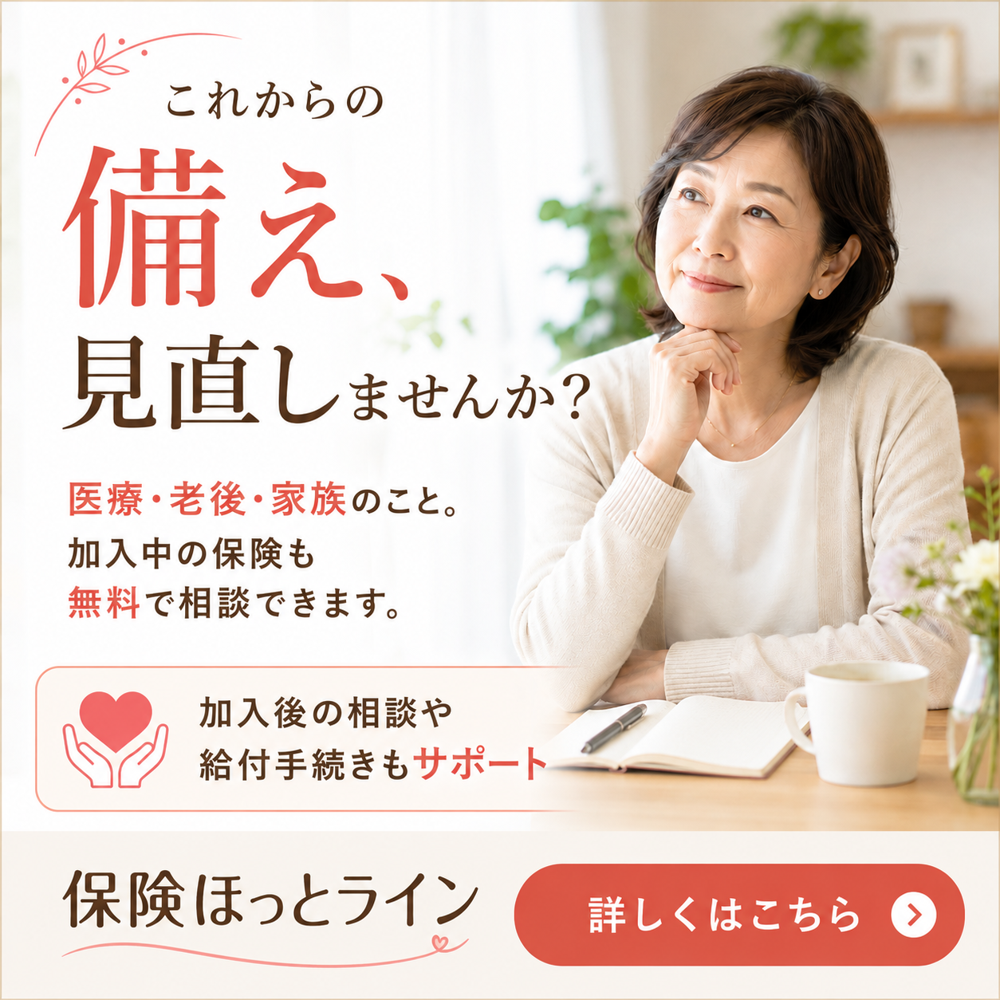
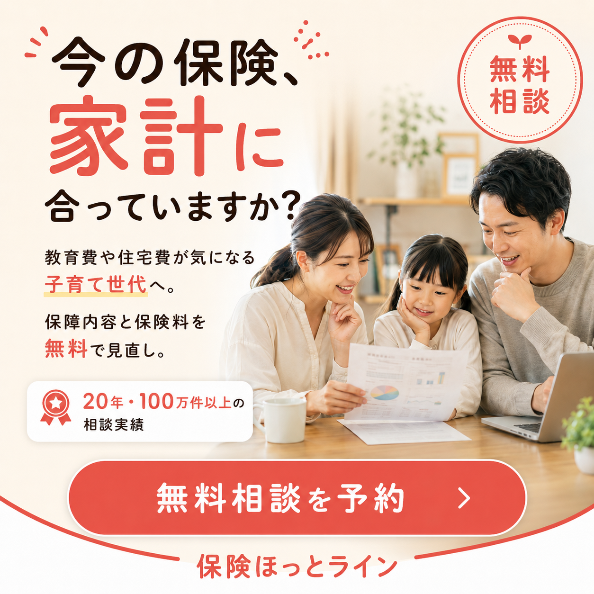

定常_広告用バナー_1:1
生成完了
入力情報
配信名
定常_広告用バナー_1:1
配信日
2026-06-09
クリエイティブ形式
1:1（正方形）
セグメント数
3
配信媒体
Google / Meta / Yahoo
商品の価値分解
LPを解析し、保険ほっとラインの価値提案を機能・体験・情緒の3層に分解します。
機能的価値
- ✓何度でも無料相談（¥0）
- ✓加入中保険の無料診断・見直し提案
- ✓加入後の給付手続きサポートも対応
- ✓強引な勧誘なし・中立的な提案
体験的価値
- ✓複雑な保険の疑問を一人のFPが一生涯サポートする「かかりつけ」体験
- ✓20年・100万件以上の実績に裏付けられた信頼感
- ✓何度相談しても無料で気軽に聞ける安心感
情緒的価値
- ✓「自分と家族を守れている」という安心と自信
- ✓将来への不安を「任せられる場所がある」という安堵感
- ✓損をしない賢い選択ができているという満足感
ターゲット仮説（分析結果）
保険の見直しを検討中のミドルシニア
家計最適化を求める子育て世帯
保険未経験の若年・新社会人層
ペルソナ（インサイト構造化）
価値分析フレームワークを転用し、3つのターゲット軸ごとの「動機」を構造化します。
ペルソナ A：【見直し（ミドルシニア）】（50〜60代 男女）
ターゲット属性
子供の独立・定年退職・健康状態の変化をきっかけに、老後に向けた保障の見直しを検討している層。過去に加入した保険の特約が切れるタイミングや、保険料の負担を減らしたいというニーズを持つ。
インサイト構造化
- 機能的価値加入中の保険をプロが無料で診断し、過不足のない保障に整理できる確実性。
- 体験的価値「今のままで本当に大丈夫か」という漠然とした不安を、具体的な数字と根拠で解消してもらえる安心感。
- 情緒的価値老後・医療・家族の将来を「任せられる相談相手がいる」という心強さ。給付手続きまで伴走してもらえる一生涯の信頼関係。
主要訴求（3点）
1.「これからの備え」へのフォーカス — 医療・老後・家族の具体的な不安を解消
2.加入中保険の無料診断 — 「今のままで本当に大丈夫か」をプロが無料チェック
3.加入後の継続的なサポート — 給付手続きまで一生涯寄り添う信頼性
生成されたクリエイティブ
3枚 ／ 1:1
ペルソナ C：若年
クリエイティブレバー
【 表現レイヤー 】
「保険、何から考えればいい？」という疑問文をメインに据え、知識ゼロでも気軽に相談できる心理的ハードルの低さを全面訴求。「はじめての方も安心」「相談無料」を視覚的に強調し、未経験層の行動を後押しします。
【 デザインレバー 】
- スマホを持つ若い女性写真で「自分ごと」感を演出
- 緑の温かみあるトーンで親しみやすさを担保
- ¥0・無料を大きく配置しノーリスク感を強調
ペルソナ A：見直し

クリエイティブレバー
【 表現レイヤー 】
「これからの備え、見直しませんか？」と問いかけ、老後・医療・家族への具体的な不安を優しく解消するトーンで訴求。加入後のサポートまで伝え、「一生涯の伴走者」としての信頼感を醸成します。
【 デザインレバー 】
- ミドルシニア女性の落ち着いた表情で共感・安心感を演出
- 暖色系の柔らかいトーンで上品さと親しみを両立
- ハートアイコンで「寄り添い」を視覚的に表現
ペルソナ B：子育て

クリエイティブレバー
【 表現レイヤー 】
「今の保険、家計に合っていますか？」と問いかけ、教育費・住宅費が気になる子育て世代に家計最適化の視点を訴求。100万件以上の実績という数字で信頼性を担保します。
【 デザインレバー 】
- 家族3人の笑顔写真でターゲットが「自分ごと」として認識
- 温かみのあるベージュ系背景で家族感・安心感を演出
- 「無料相談」バッジを目立つ位置に配置